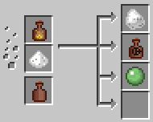

Witchery Mod for Minecraft
Search this site
Witchery
Poppets
Dream Weaving
Circle Magic
Brewing
Infusions
Familiars
Fetishes
Oil of Vitriol

Oil of Vitriol is an ingredient produced in a distillery by using
Foul Fume
and
Quicklime
.